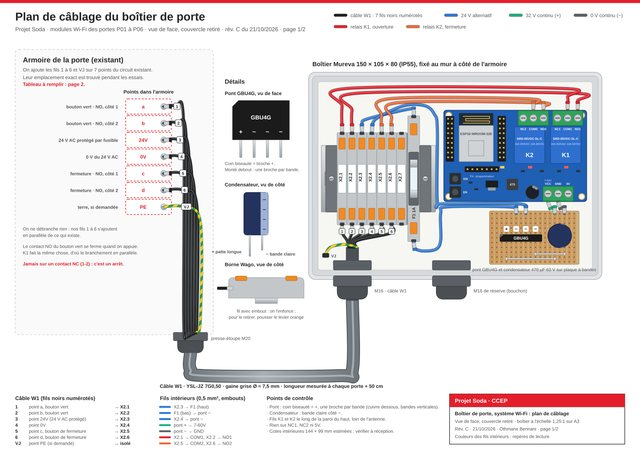
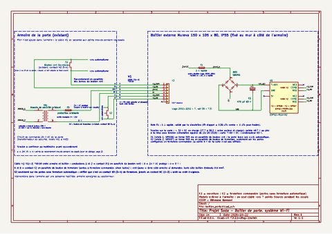
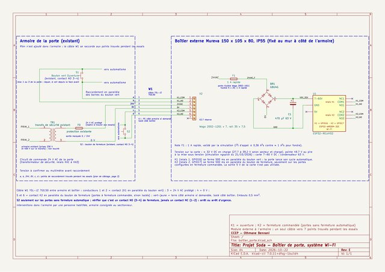
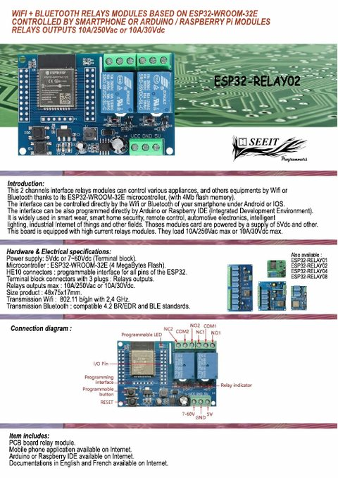

-

ImagePlan de câblage du boîtier (page 1)
Vue de face, couvercle retiré : chaque fil borne à borne.
-

PDFSchéma KiCad rév. E (PDF)
Armoire (S1, S2), câble W1, bornier X2, fusible F1, redresseur, carte (K1, K2).
-

ImageSchéma KiCad rév. E (image)
Aperçu du schéma.
-
KICAD SCH
KiCad
Fichier schéma KiCad (.kicad_sch)
À ouvrir dans KiCad 7 ou plus, avec le fichier projet.
-
KICAD PRO
KiCad
Fichier projet KiCad (.kicad_pro)
À placer dans le même dossier que le schéma.
-
NET
Netlist
Netlist vérifiée
Liste des connexions exportée du schéma, vérifiée liaison par liaison.
-
ZIP
ZIP
Simulation de la carte sur Wokwi
Projet wokwi.com : « set close 1 » puis « test_close » pour voir K2.
-

PDFFiche technique ESP32-RELAY02
Document du fabricant de la carte (Seeit).